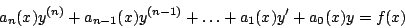
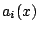
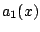
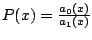
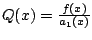
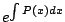
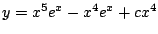
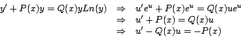

|
|
|
|
|Instituto Tecnológico de Costa Rica|Escuela de Matemática| M. Sc. Geovanni Figueroa M. |
|
|
Ecuación lineal de primer ordenTal vez, esta sea una de las ecuaciones diferenciales de mayor importancia, pues muchas de las aplicaciones que trataremos se modelan por medio de una ecuación de este tipo.
Observación: una ecuación diferencial lineal de orden

donde los coeficientes  son funciones reales y
y al dividir por 
La cual tiene la forma
donde  y .
Demostración
podemos comprobar que  es un factor integrante. Multiplicando la ecuación 1.10 por este factor tenemos que
de donde
e integrando respecto con
como se quería. Ejemplo:
Reescribiendo la ecuación tenemos
El factor integrante está dado por
Con lo cual la solución está dada por
Es decir,  Ejemplo:
Encuentre una función de forma tal que la ecuación diferencial (1.11) sea exacta y resuelva dicha ecuación diferencial. Para que la ecuación (1.11) sea exacta debe cumplir
De aquí obtenemos la ecuación diferencial lineas en
cuya solución es
De donde tomando
Ejemplo:
donde y son funcuiones reales, se transforma en una ecuación diferencial lineal al hacer Como
Sustituyendo la cual es una ecuación diferencial lineal.
|